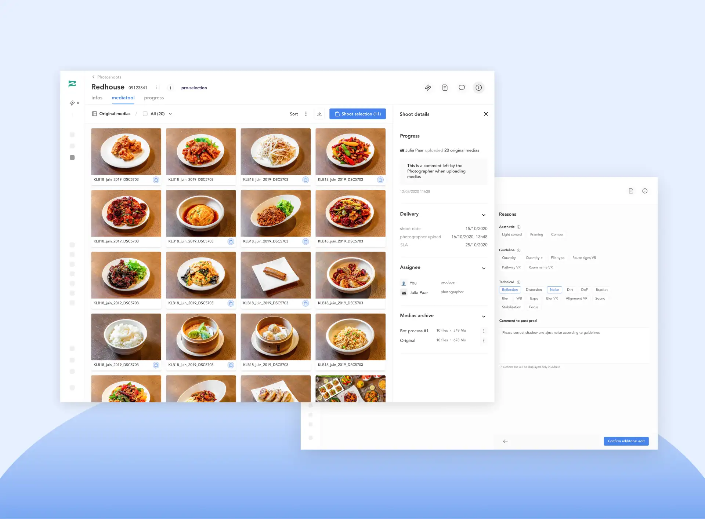

Janvier 2020 - Décembre 2020
Meero est un service de production photographique à la demande présent dans le monde entier qui s'adresse à deux typologies d'acteurs :
Les étapes de production, de post production et de livraison des médias aux clients sont gérées par Meero.

+ d'autres produits : Meero Drop (transfert de fichiers collaboratif), MyMeero (gestion d'activité pour le photographe), Eïko (retouche automatique de visuels)